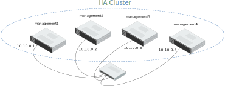

10. [Community] - High Availability¶
In production environment, high availability is often needed to ensure continuous cluster operations.
To achieve that, one of the possible solution is to setup an Active-Passive HA (high availability) cluster. The BlueBanquise stack COMMUNITY high_availability role can setup a Corosync - Pacemaker cluster.
Services then run as “resources” in that cluster, and migrate from one management server to another. If one the management servers pool member crash, resources running on it just migrate to another management to ensure continuous production.
It is assumed in the following part that your hardware is composed of multiple management nodes and a storage array shared by all management. Some resources need to store data (database, state, etc.) and so need a shared storage space to recover when migrating from one management to another.
10.1. Create HA Cluster¶
It is assumed here that management nodes will be 2, and named management[1-2]. It is however highly recommended to have more management nodes, to allow safer production.
First step is to follow standard process, to deploy an isolated management node. We will assume that this first management node is deployed and named management1.
Once this node is ready, first step is to deploy an HA cluster on it.
10.1.1. ha_cluster group¶
In the inventory, create file inventory/cluster/groups/ha_cluster with the
following content:
[ha_cluster]
management1
Then, create folder inventory/group_vars/ha_cluster and in this folder, create
file ha_parameters.yml with the following content:
high_availability_cluster_nodes:
- name: management1
addrs:
- management1
Note that if your management nodes posses a second network to exchange, it is
better to add a second addrs so that HA cluster can use a backup network. For
example, if management1 can also be reached at management1-lk1 from the
other management nodes, ha_parameters.yml should be defines this way:
high_availability_cluster_nodes:
- name: management1
addrs:
- management1
- management1-lk1
10.1.2. Reference node¶
The HA cluster need a reference node, that will be used to populate resources into the cluster. Good practice is to define the first management, and use extra-vars ansible-playbook options on the fly when this node is unavailable.
In file inventory/group_vars/ha_cluster/ha_parameters.yml, add the following
variable:
high_availability_reference_node: management1
10.1.3. Cluster password¶
Last step is to define cluster password.
Generate a new SHA512 has that match your desired password, and create the
dedicated variable in inventory/group_vars/ha_cluster/ha_parameters.yml file:
high_availability_ha_cluster_password: $6$M3crarMVoUV3rALd$ZTre2CIyss7zOb4lkLoG23As9OAkYPw2BM88Y1F43n8CCyV5XWwAYEwBOrS8bcCBIMjIPdJG.ndOfzWyAVR4j0
..note:: This is an example of SHA512 hash, that match hacluster. Do not use this one in production.
10.1.4. Deploy cluster¶
Now simply execute the high_availability role on management1. If all goes
well, at the end, the HA cluster should be ready. Use pcs status command
to check HA cluster status at any time.
10.2. Populate cluster with resources¶
Now that HA cluster is running, it is time to populate it with resources.
BlueBanquise HA role organize by default resources by groups. Each group of resources act as a collocation constraint: resources of a same group must be running on the same server. Then, in each group, definition list order act as a start order constraint: resources must start in the same order than the definition list. If for any reason a resource in the list fails to start, the remaining resources of the list will not start.
The best example is the “repositories pack of resources”.
This group, called here repositories, contains fs mounting point resource, virtual ip resource, and a service resource. All needs to be running on the same server (constraint provided by the group) and service must not start if fs is not mounted and virtual ip not created (constraint provided by start order).
To populate cluster with this group of resources, in file
inventory/group_vars/ha_cluster/ha_parameters.yml, add the following content:
high_availability_resources:
- group: http
resources:
- id: fs-repositories
type: Filesystem
arguments: "device='/dev/repositories' directory='/var/www/html/repositories/' fstype='ext4'"
- id: vip-http
type: IPaddr2
arguments: "ip=10.10.77.1 cidr_netmask=255.255.0.0"
- id: service-http
type: systemd:httpd
Then, simply re-execute the playbook to populate cluster with these resources.
You need to define this way each pack of resources to be put into HA.
For a full list of example, refer to the High Availability role readme, section List of standard resources.
Once all resources are correctly populated, it is mandatory to deactivate services handling by Ansible on this server. You do not want services to be started by Ansible during playbooks execution, as critical services are now managed by the HA cluster.
Create file inventory/group_vars/ha_cluster/services.yml with the following content:
enable_services: false
start_services: false
And replay whole management playbook on server to push new configuration.
10.3. Configure cluster¶
It is possible, using the role, to configure advanced elements of the cluster.
Please refer to the High Availability role readme.
By default, role supports adding/modifying clusters properties, adding stonith, and defining advanced constraints.
10.4. Expanding cluster¶
Once all configuration is running with a single node, deploy other management nodes using standard PXE process.
Expand now ha_cluster group. Edit file inventory/group_vars/ha_cluster and
add new managements (here management2):
[ha_cluster]
management1
management2
And add other managements into inventory/group_vars/ha_cluster/ha_parameters.yml:
high_availability_cluster_nodes:
- name: management1
addrs:
- management1
- name: management2
addrs:
- management2
Deploy then standard configuration on the other management nodes, using playbooks. Since they are part of the ha_cluster group, their services will not start by default.
Now deploy the high_availability role on these management nodes. Once executed,
ensure using pcs status command that all the management nodes have now joined the
HA cluster. After few seconds (up to 1-2 minutes on some system), these nodes should
be marked as online, and resources can migrate on them on demand or in case of issues.